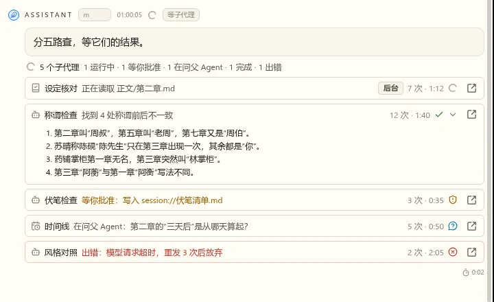
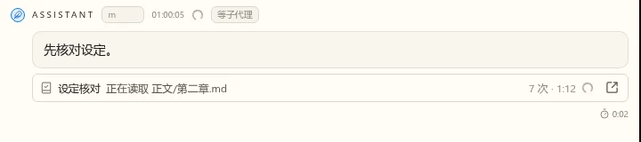
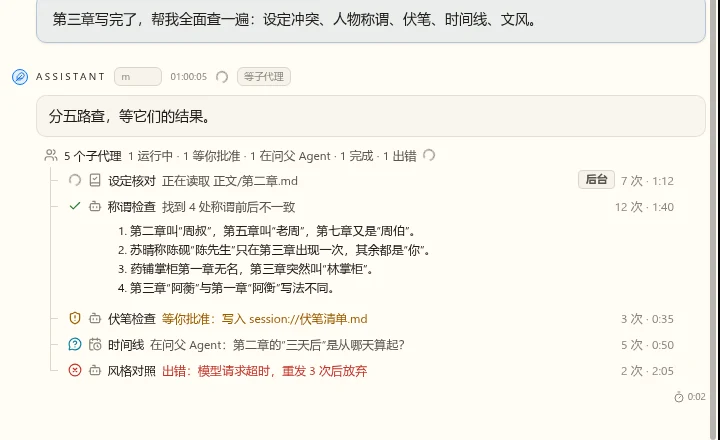
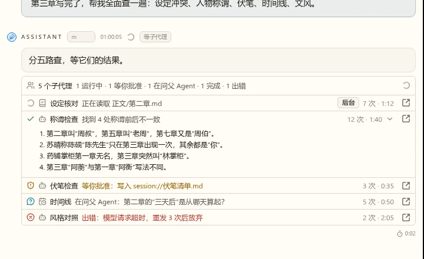
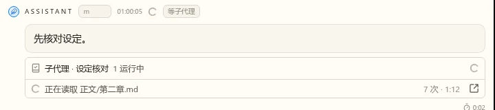

都是静态稿：真实的对话视图和 nb-ui 组件，卡片本身是草稿，数据是写死的样本。第 1 轮只问父会话里子代理的卡片怎么画。
每张图的状态是故意凑在一起的：一组五个子代理，分别是运行中（标了“后台”的是 async 派出的）、完成（结果展开）、等你批准、在问父 Agent、出错。下面一行是只派一个时的样子。
三种都是你定的“一行进度”：名字、正在做什么（完成后换成结果第一句）、工具次数与用时、状态，右边是打开子会话；完成的点开看结果全文。区别在框和组头。


和命令、提问这些卡片一个样子，只派一个时最干净。派得多时五张卡叠起来，组头是框外的一行小字，不太像一组。

最轻，像 omp 的进度树。但和“过程”里的步骤行长得太像，等你批准这类要处理的事不够显眼；打开按钮要悬停才出来。


一组就是一个框，卡头写个数和状态，行间分隔线，和你在 t05 选的“模型列表那样的分组”一致。只派一个时卡头加一行显得重复，推荐那时画成 A 的单卡（一行）。
搭稿时发现、会影响实现的三件事（不用你定，记下来进计划）：
agent_spawn 调用，对话视图现在逐个画节点，要加“相邻的同类节点合成一组”的能力。后面几轮：父会话向导里怎样标来源、子会话顶部的路径、会话面板的嵌套；之后是 Profile 设置页的“可派的子代理”、异步提问、shell 转后台的卡片。